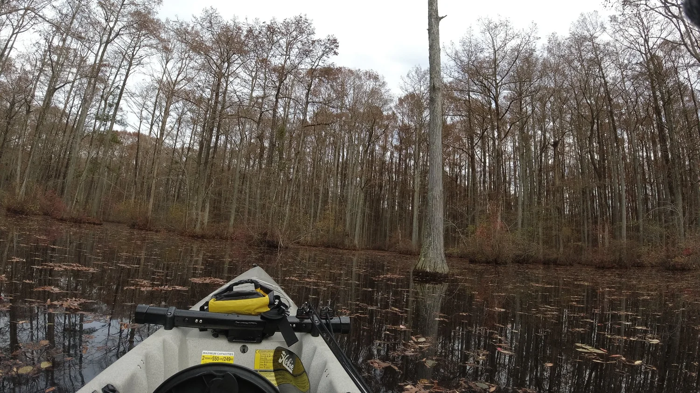

Is Our Boat Too BIG?

The amas come off today and we leave the sail behind as we paddle through the maze of Cypress trees living in the only blackwater swamp in Wake County, North Carolina.
Would our 18 foot boat get stuck and have to be rescued?
 ▶ Watch on YouTube
▶ Watch on YouTube18 Foot Hobie Mirage Tandem Island Going Through a Swamp
This Historic Landmark is such a hidden treasure and we were in awe of the canopy of cypress trees. The beauty and peaceful surroundings were just amazing.
The Millpond is located on an 85-acre preserve and offers paved paths, boardwalks, fishing, and of course kayaking. And yes, there was a functioning mill that is said to have been built in the 1820’s. The dam that created the blackwater swamp and pond remains. Some of remnants of the mill can still be seen in the beautiful picturesque preserve.
The blackwater is dark because of the tannins produced by the slow-moving water decaying the immersed trees and other vegetation. And no, you certainly don’t want to have those tannins in your wine.
Taking this 18 foot boat through the winding narrow passages had its challenges.
We hit ground.

Free and open to the public!
If you want to look it up:
Robertson Millpond Preserve
6333 Robertson Pond Road
Wendell, NC 27591
naturepreserve@wakegov.com